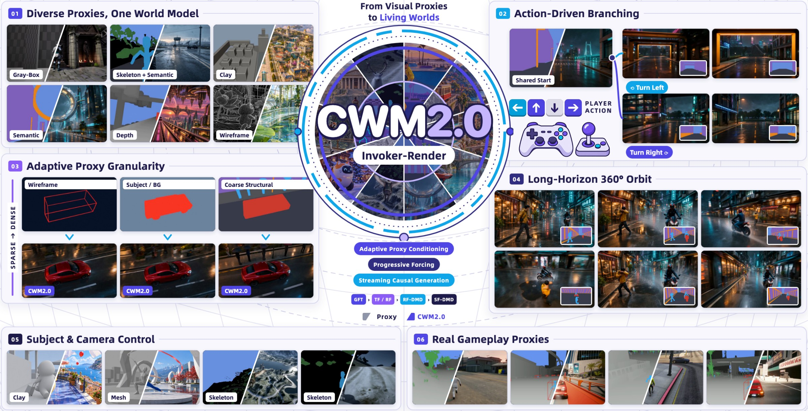
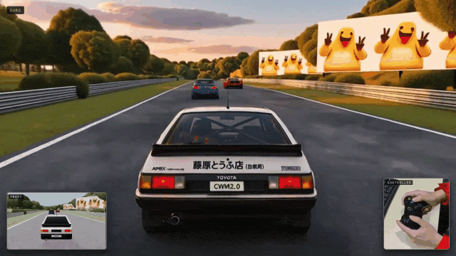
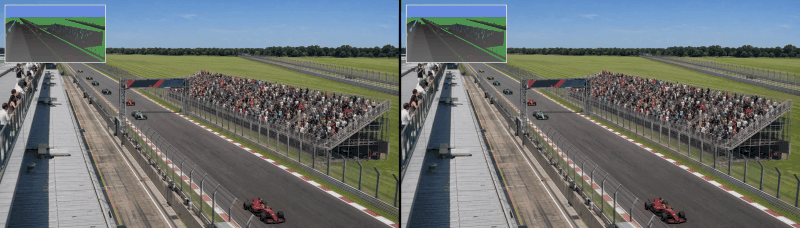

<h1 align="center">Code World Model 2.0: Towards Infinite Controllable Video Generation</h1>
<b>Invoker-Render</b>: proxy-conditioned video rendering for offline creation and real-time streaming
Ruoyu Wang<sup>1,2,</sup> · Hao Zhong<sup>1,3,</sup> · Yanming Yang<sup>1,2,</sup> · Jiahao Tian<sup>1,2,</sup> · Lin Liu<sup>1,*,†</sup>
Biao Gong<sup>1</sup> · Guoshan Lu<sup>1</sup> · Yiding Tian<sup>1</sup> · Chunhua Shen<sup>3,‡</sup> · Zhenzhong Lan<sup>1,2,‡</sup> · Chi Zhang<sup>2,‡</sup>
<sup>1</sup>Inclusion AI, Ant Group <sup>2</sup>Westlake University <sup>3</sup>Zhejiang University
<sub><sup>*</sup>Equal contribution <sup>†</sup>Project leader <sup>‡</sup>Corresponding author</sub>
Highlights · Demo · Quick Start · Documentation · Citation · 简体中文
---
Code World Model 2.0 keeps the world state in an upstream engine and hands rendering to a video model. The two are connected by visual proxies: plain structural videos that fix the camera path, scene layout, and entity motion, and leave appearance to the renderer.
Invoker-Render is that renderer. It takes a structural proxy, one appearance reference image, and text. This repository is the inference codebase for its causal four-step streaming model, built on MiniMax-H3, SGLang, and SGLang-Omni. The method, training data, and full evaluation are in the technical report.
Paper: arXiv:2611.22925. A PDF copy is also kept in this repository.
Highlights
- Unbounded streaming, no visual jumps. Each chunk reads a fixed appearance anchor and a bounded window of recent history, so a session runs for as long as proxy frames arrive. The racing demo below is one continuous 30-minute generation.
- Coarse or fine proxies, chosen at run time. One model accepts semantic maps, sparse 3D boxes, subject masks, shaded geometry, and boxes with skeletons, at any level of detail.
- Four steps per chunk. The streaming model is trained with Progressive Forcing, a staged curriculum described in the report.
- Ahead of recent streaming renderers. On 140 held-out rollouts it ranks first on all four judged axes, with an overall Elo of 1343.2 against 1245.3 for SolarRenderer (Causal), 1051.9 for StreamRender-H3, and 359.6 for Streaming CWM.
- Ready to serve. A WebSocket session service on eight GPUs, a file client, and an interactive browser client.
Demo
Every clip shows the input proxy as an inset: the inset fixes how the camera and the objects move, and the model generates materials and lighting.
Long-horizon streaming
<em>One continuous 30-minute generation from a coarse racing proxy (inset, upper left), with no cut or reset. Six two-second excerpts; the timestamp is the position in the take. Watch the full 30-minute video on Bilibili.</em>
Interactive driving

<em>A gamepad-driven session: the gamepad (inset, lower right) steers the low-poly proxy (inset, lower left), and the rendered car follows. The car, the two cars ahead, and the dusk track stay consistent throughout.</em>
Camera control
Same scene, same first frame, same event; only the camera route changes. Route A is on the left and route B on the right, each with its own proxy inset.
<em>Coastal tunnel. A: a drone stays behind the car through the tunnel and rises after the exit. B: the camera lifts over the headland as the car enters, waits above the exit, and follows the car out.</em>
<em>Rocket launch. A: a fixed ground camera tilts up and pushes in. B: a drone approaches the tower at low altitude, climbs with the rocket, and ends above the tower looking toward the coast.</em>

<em>Grand prix hairpin. A: a broadcast camera on the race-control roof pans and zooms with two cars entering the corner side by side. B: an FPV drone dives from the roof to the track and follows above and behind the overtaking car.</em>
The previews are downsampled excerpts played at 6 FPS; assets/demo/metadata.json lists the source clips. Playback FPS is not inference throughput. The 30-minute racing demo was generated with a reference-guided quality policy that the default service does not enable.
Release Status
- [x] Inference code: streaming runtime, session service, file client, and browser client
- [x] Deployment guide
- [x] Model weights on Hugging Face
- [x] Homepage
- [x] Technical report on arXiv (PDF copy in this repository)
- [ ] Training method and data
Unchecked items have not been published. Model weights are hosted on Hugging Face; they and prepared bundles are not included in this repository.
Quick Start
Requirements: Linux, Python 3.11 or 3.12, and NVIDIA CUDA. The default production profile uses eight GPUs on one node. There is no standalone lockfile; provision the environment with the environment guide, then check it from the repository root:
bashPY=/path/to/serving-env/bin/python "$PY" invoker_render.py check-env
1. Prepare a bundle. Model weights are published on Hugging Face; point the /assets/... paths below at your local copies. Preparation hashes and references those files without copying them. The output directory must not exist yet. See Bundle preparation for each file.
bashARTIFACT=/assets/invoker-render/artifact.json BUNDLE=/assets/invoker-render/bundle "$PY" invoker_render.py prepare \ --artifact "$ARTIFACT" \ --cwm-silence /assets/invoker-render/silence.safetensors \ --decoder-config /assets/causal-decoder/config.json \ --decoder-weights /assets/causal-decoder/decoder.safetensors \ --state-reservation-gib 48 --output "$BUNDLE"
2. Start the streaming service. It binds loopback and serves sessions at /v1/session.
bash"$PY" invoker_render.py serve --model-path "$BUNDLE" --port 18860
3. Render a video from files. Run this in a second terminal.
bash"$PY" invoker_render.py infer \ --model-path "$BUNDLE" --artifact "$ARTIFACT" \ --uri ws://127.0.0.1:18860/v1/session \ --first-image /inputs/first.png \ --proxy-video /inputs/proxy.mkv \ --prompt-file /inputs/prompt.txt \ --seed 42 --output-dir /outputs/invoker-render-001
The first image is 1344×768 RGB. The proxy video is 24 FPS with 17*N+5 frames, at least 39. The output directory must be new; a completed run writes video.mp4 and inference.json.
4. Open the browser client (optional). It reuses the running service.
bash"$PY" invoker_render.py web-adapter \ --model-path "$BUNDLE" --artifact "$ARTIFACT" \ --native-uri ws://127.0.0.1:18860/v1/session --port 18861 "$PY" invoker_render.py web \ --backend http://127.0.0.1:18861 --port 18862 --incremental-proxy
Open http://127.0.0.1:18862/ and select a first image that matches the scene.
Documentation
| Task | Guide |
|---|---|
| Configure dependencies and CUDA | Environment |
| Prepare checkpoints and model assets | Model contract · Bundle preparation |
| Choose execution and codec placement | Deployment profiles |
| Run the streaming API and file client | Serving and file inference |
| Use the browser client | Browser deployment · Client guide |
| Check timing and completion records | Output verification |
textinvoker_render.py Command line: prepare, serve, infer, web-adapter, web, check-env docs/ Deployment documentation src/sglang/python/sglang/multimodal_gen/ Native inference runtime src/sglang/projects/minimax_h3/ Model adapters, tools, configs, browser client, vendored frameworks
Citation
If you find this work useful, please cite:
bibtex@misc{wang2026codeworldmodel20, title = {Code World Model 2.0: Towards Infinite Controllable Video Generation}, author = {Ruoyu Wang and Hao Zhong and Yanming Yang and Jiahao Tian and Lin Liu and Biao Gong and Guoshan Lu and Yiding Tian and Chunhua Shen and Zhenzhong Lan and Chi Zhang}, year = {2026}, eprint = {2611.22925}, archivePrefix = {arXiv}, primaryClass = {cs.CV}, url = {https://arxiv.org/abs/2611.22925} }
Acknowledgements and License
Invoker-Render builds on MiniMax-H3, SGLang, SGLang-Omni, and the other vendored open-source components listed in Third-party notices. We thank their authors.
The code written for this repository is released under the Apache License 2.0. Vendored components keep their own licenses, which include Apache-2.0 and CC BY-NC 4.0 (non-commercial) terms; the license file inside each component directory governs that component. Model weights and other separately distributed assets have their own terms. Read the legal notice before use or redistribution.